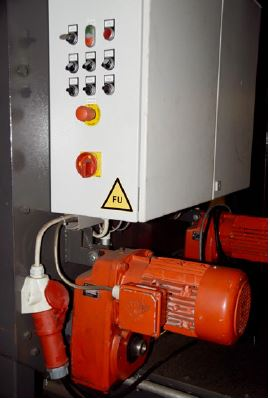
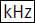
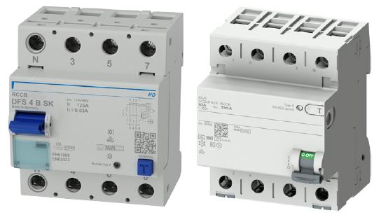
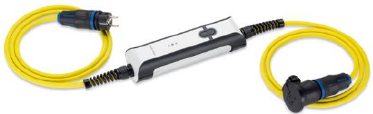
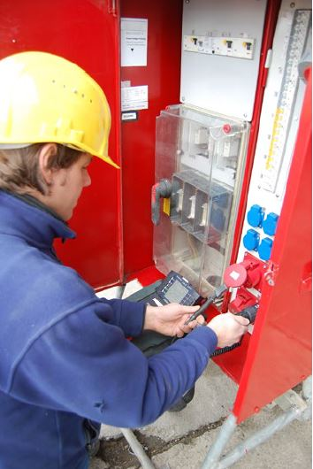

In allen Stromkreisen müssen geeignete Maßnahmen nach VDE 0100-410 angewendet werden.
Ableitströme können eine RCD zur Auslösung bringen. Aus diesem Grund ist darauf zu achten, dass die ausgewählten Betriebsmittel möglichst geringe Ableitströme verursachen.
Stromkreise mit Bemessungsstrom In ≤ AC 32 A mit fest angeschlossenen handgeführten elektrischen Verbrauchsmitteln müssen über RCDs mit einem Bemessungsdifferenzstrom IΔn ≤ 30 mA betrieben werden.
Für diese Stromkreise sind die folgenden Schutzeinrichtungen zu verwenden:
| Allstromsensitive RCDs (Typ B oder B+) dürfen grundsätzlich nicht hinter pulsstromsensitiven RCDs (Typ A oder F) installiert sein. |

Abb. 12 Prinzipschaltbild mit zulässiger und unzulässiger Hintereinanderschaltung
Frequenzgesteuerte Betriebsmittel sind deutlich zu kennzeichnen. Hinweise können aus der Betriebsanleitung entnommen werden.

Abb. 13 Beispiel für die Kennzeichnung eines Betriebsmittels mit Frequenzumrichter (FU)
Frequenzgesteuerte Betriebsmittel verursachen aufgrund von EMV-Maßnahmen betriebsbedingte Ableitströme, die über den Schutzleiter abfließen. Diese Ableitströme können RCDs zur Auslösung bringen. Aus diesem Grund ist darauf zu achten, dass die ausgewählten Betriebsmittel möglichst geringe Ableitströme (weniger als 30 % des Bemessungsdifferenzstroms) verursachen.
Um im Falle einer Unterbrechung des Schutzleiters eine Gefährdung zu minimieren, ist es sinnvoll, erdungsunterstützende Maßnahmen zu treffen, z. B. zusätzliche Erdungsspieße an ortsfesten Betriebsmitteln der Schutzklasse I oder am Baustromverteiler.
Diese Betriebsmittel, z. B. Krane, Aufzüge, Schweißumformer, können folgende Fehlerströme erzeugen:
Deshalb dürfen diese elektrischen Betriebsmittel hinter einer RCD vom Typ A oder F nicht betrieben werden. Der Schutz im Fehlerfall kann nur sichergestellt werden durch
Steckerfertige Betriebsmittel bis 4 kVA dürfen keine glatten Gleichfehlerströme erzeugen.
Bei steckerfertigen Betriebsmitteln mit Phasenanschnittsteuerung ist grundsätzlich eine RCD vom Typ A ausreichend.
Bei einphasigen Betriebsmitteln mit Frequenzumrichter, z. B. Rüttler, Bohrhämmer, können neben Wechsel- und Pulsfehlerströmen der Netzfrequenz auch nieder- und höherfrequente Wechselfehlerströme auftreten, die von RCDs vom Typ A nicht ausreichend empfindlich erkannt werden. In diesen Fällen sind RCDs vom Typ F erforderlich.
| Hinweis |
| Die Eigenschaften der Fehlerstromerfassung in einer RCD vom Typ F sind in einer RCD vom Typ B oder B+ enthalten. |
| Fehlerstrom-Schutzeinrichtung (RCD), Typ | Symbol |
| A | |
| F | |
| B | |
| B+ |  |
Abb. 14 Symbole auf RCDs

Abb. 15 4-polige RCDs
Um die in Abschnitt 3.2 genannten Steckdosen einer Gebäudeinstallation nutzen zu können, ist ein ergänzender Schutz erforderlich. Dieser kann durch eine ortsveränderliche Schutzeinrichtung zur Schutzpegelerhöhung nach VDE 0661 (PRCD) realisiert werden, die nachfolgende Anforderungen erfüllt:
Außerdem muss diese Schutzeinrichtung folgende ergänzende Funktionen aufweisen:
Für einen ergänzenden Schutz von Wechselstrom-Steckdosen kann eine einphasige ortsveränderliche Schutzeinrichtung mit den in Abschnitt 5.4.1 genannten Anforderungen und ergänzenden Funktionen über eine genormte Steckvorrichtung zwischen ein Betriebsmittel und eine Steckdose geschaltet werden oder in Betriebsmitteln, z. B. in Leitungsrollern oder mobilen Verteilern, integriert sein.
Die Frage, ob beim Einschalten dieser als PRCD-S bekannten Schutzeinrichtung das Tragen von Handschuhen zulässig ist, beantwortet die Betriebsanleitung des Herstellers.

Abb. 16 PRCD-S
In ungeerdeten Netzen, z. B. hinter ungeerdeten Stromerzeugern, ist diese Schutzeinrichtung nicht zu verwenden.
Für einen ergänzenden Schutz von Drehstrom-Steckdosen kann eine mehrphasige ortsveränderliche Schutzeinrichtung mit den in Abschnitt 5.4.1 genannten Anforderungen und ergänzenden Funktionen über eine genormte Steckvorrichtung zwischen ein Betriebsmittel und eine Steckdose geschaltet werden oder in Betriebsmitteln, z. B. in mobilen Verteilern, integriert sein. Anforderungen aus VDE 0661, die auch für eine mehrphasige ortsveränderliche Schutzeinrichtung anwendbar sind, müssen berücksichtigt werden.
Wenn im Fehlerfall glatte Gleichfehlerströme von mehr als 6 mA auftreten, können RCDs vom Typ A oder F in der vorgelagerten elektrischen Anlage unwirksam werden. Das kann verhindert werden durch die Verwendung einer mehrphasigen ortsveränderlichen Schutzeinrichtung, welche die erforderlichen Eigenschaften zur Fehlerstromerfassung einer RCD vom Typ B oder B+ aufweist und mittels einer Zusatzfunktion eine Abschaltung bei glatten Gleichfehlerströmen von mehr als 6 mA bewirkt.
| Anmerkung |
| Eine RCD vom Typ B oder B+ mit der Bezeichnung MI verfügt über eine solche Zusatzfunktion und gewährleistet als Bestandteil einer mehrphasigen ortsveränderlichen Schutzeinrichtung, z. B. als mobiler Verteiler, mit den im Abschnitt 5.4.1 genannten zusätzlichen Anforderungen und ergänzenden Funktionen einen ergänzenden Schutz von Drehstromsteckdosen. |
Als wirksame Schutzmaßnahme ist immer auch der Einsatz eines Trenntransformators zum Betrieb eines einzelnen Verbrauchsmittels möglich.
Die Steckdose muss nachweislich frei von Installationsfehlern sein.
Die Schutzmaßnahmen müssen bekannt und die Prüfungen nach Abschnitt 7 nachgewiesen sein.

Abb. 17 Mobiler Verteiler mit RCD, Leitungsschutzschaltern und mehreren Steckdosen
Der Anwender muss hinter einer solchen Steckdose in jedem Fall eine RCD entsprechend den Festlegungen der Abschnitte 5.2 und 5.3 einsetzen.
Die Steckdose muss nachweislich frei von Installationsfehlern sein.
Die Schutzmaßnahmen müssen bekannt und die Prüfungen nach Abschnitt 7 nachgewiesen sein.
Eine geeignete RCD muss die Anforderungen nach den Abschnitten 5.2 und 5.3 erfüllen.
Unter diesen Voraussetzungen darf die Steckdose direkt als Anschlusspunkt genutzt werden.

Abb. 18 Stationärer Verteiler mit zugewiesenen, geprüften Steckdosen und geeigneter RCD
Außer den aufgezeigten Maßnahmen sind noch folgende Maßnahmen möglich:
In Bereichen mit erhöhter elektrischer Gefährdung sind die Maßnahmen nach DGUV Information 203-004 "Einsatz elektrischer Betriebsmittel bei erhöhter elektrischer Gefährdung" anzuwenden.
Bei der Verwendung von Stromerzeugern sind die Maßnahmen nach DGUV Information 203-032 "Auswahl und Betrieb von Stromerzeugern auf Bau- und Montagestellen" anzuwenden.
In IT-Systemen nach VDE 0100-410 Abschnitt 411.6 muss ein Isolationsfehler erkannt werden, z. B. durch Isolationsüberwachungseinrichtungen (IMDs). Der Isolationsfehler ist unverzüglich zu beseitigen. Sofern eine Isolationsüberwachungseinrichtung nicht überwacht wird, muss die elektrische Anlage beim Auftreten des ersten Fehlers abschalten. Überwacht heißt hier, dass die Wahrnehmung der Meldung sichergestellt ist und Maßnahmen zur Fehlerbeseitigung durch eine Elektrofachkraft eingeleitet werden.
Jede elektrische Anlage muss vor Inbetriebnahme, nach Änderung und nach Instandsetzung sowie in angemessenen Zeitabständen von einer Elektrofachkraft geprüft werden (§ 5 DGUV Vorschrift 3 und 4 "Elektrische Anlagen und Betriebsmittel"). Die Prüfungen sind zu dokumentieren.
Die Inbetriebnahmeprüfung ist entsprechend den in VDE 0100-600 festgelegten Maßnahmen durchzuführen.
Die Häufigkeit der wiederkehrenden Prüfungen richtet sich nach den Festlegungen in der Gefährdungsbeurteilung, der Umfang nach den Festlegungen in VDE 0105-100.

Abb. 19 Inbetriebnahmeprüfung eines Baustromverteilers nach VDE 0100-600